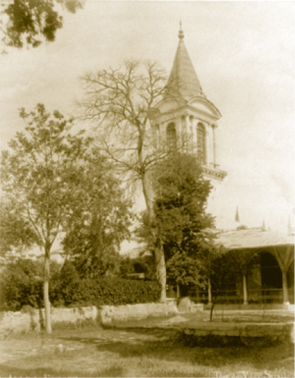

BÂBÜ’S SELAM VE İKİNCİ AVLU
Bâbü’s selam âdeta devlete gösterilen saygının kapısıdır. “Ortakapı” da denilen bu iki kuleli kapı, Topkapı’nın sembolü olmuştur. İmparatorluğun ihtişamını gösteren bu kapı, ilk defa Fatih zamanında inşa edilmekle birlikte 16. ve 17. yüzyıllarda çeşitli tamiratlar görmüştür. Üzerindeki tamir kitabesi 1758’de kapıda tamirat yapıldığını göstermektedir. Kapının üst tarafında enfes bir hatla Kelime-i Tevhid (Lâ ilahe illallah Muhammedün Resulullah) yazılıdır. Bu kapı birinci avlu (Alay Meydanı) ile ikinci avluyu (Divan Meydanı) ayırır. Bugün müzelerin gişelerinin bulunduğu bu kapıdan girerken Sadrazam Paşa dâhil, kimse at üzerinde kalamaz. Bu kapıdan sadece padişah atıyla girebilirdi, saray kadınları ise saltanat arabaları ile geçerlerdi.
Kapının içe bakan kısmında “Cennâti Adnin müfetteheten lehümü’l-ebvâb / O güzel yer: Kapıları yalnız kendilerine açılmış olan Adn cennetleridir. (Sad Sûresi, 50)” ifadesi yazılıdır.
Kapının üzerindeki iki kule Kanuni devrine aittir. Bu kule müştemilatının içinde, yabancı elçiler saraya girmelerine müsaade edilinceye kadar misafir edildikleri kapıcıbaşı ağasının odası da bulunmaktadır. Bu yönüyle kulelerin alt tarafları bir çeşit bekleme salonu vazifesi görmüştür.
Bâbü’s selam’dan içeri girenler bir tarih ile karşı karşıyadırlar. Burada herkes attan inerdi. 1739 senesinde Belgrat Barışı’ndan zaferle dönen İvaz Mehmed Paşa’nın I. Mahmud’un istisnaî atıfeti dolayısıyla atla girmesi dışında kimsenin bu kapıdan atla girdiği görülmez. İstisnası sadece padişahın kendisiydi. Bu kapı ile Topkapı Sarayı’nın devlet ofisleri başlar. Bütün divan toplantıları sabah namazından hemen sonra olduğu için Ayasofya’da namaz kılan devletliler bu kapıdan içeri girerler. Yerleştikleri zaman Divan-ı Hümâyûn’da mevsimine göre şerbet veya sıcak bir içecekle kendileri buyur edilir. Divan-ı Hümâyûn’un yani Kasr-ı Adalet denen yerin yanında da ilgili ofisler bulunur. Bu ön planda nişancının ve sadaretten padişaha takdim edilecek arz tezkirelerinin yazıldığı yerdir ve bir yerde de bir Hazine-i evrak’tır. Bu evrak kısmen Başbakanlık ofisinde kısmen de sarayda Matbah-ı amire’nin yanındaki imparatorluk arşivlerinde bulunuyor.
İkinci Avlu (Divan Meydanı)
Osmanlı İmparatorluğu’nun kamusal hayatının zirvesiyle karşılaşırız. Kamusal görkeminin bütünüyle gözümüze, yüzümüze çarptığı bir yerdir. Bu avlunun sağ tarafında imparatorluk mutfakları diyeceğimiz Matbah-ı amire bulunurdu. Matbah-ı amire’de günde elli ila altmış çeşit yemek çıkardı. Bu elli ila altmış çeşit yemeğin her birinin padişah tarafından yenildiğini düşünmemeliyiz. Saray halkının, bilhassa Harem ve Enderunluların da bu muhteşem mutfağı tattığı ve öğrendikleri açıktır.
Bugün burada on iki bini geçen çini porseleni kısmen teşhir edilebilmektedir. Henüz restore edilen Helvahâne ise saraydaki tatlıların değil aynı zamanda da birtakım ilaçların, şifalı macunların hazırlandığı yerdir. Burada bilhassa bakır sini, kazan, cezve gibi eşyaların zengin bir koleksiyonu bulunmaktadır.
Matbah-ı amire’nin bir köşesindeki Aşçılar Mescidi ise ahşap güzel bir yapıdır ve onun devamında da arızi olarak 1920’lerden itibaren sarayın arşivleri yer almaktadır. Hiç şüphesiz ki Topkapı’nın saray arşivleri çok zengin sayıda gönderilen nâme kopyaları ve yabancı devletlerden gelen muhtelif dillerde mektuplar, bunların dışında saray ile ilgili olan akla hayale gelmeyecek koleksiyonların bulunduğu bir arşivdir. Mesela burada çok sayıda kadı hücceti, sicillerden hükümler de bulunabilir.
Sarayın bu bölümünde çok büyük hacimde sayısız diyebileceğimiz sütun ve sütun başlıkları bulunur. Bunları bilhassa Fatih Sultan Mehmed Han’ın İstanbul’un muhtelif noktalarından toplatarak buraya getirttiği ve burada muhafaza ettirdiği anlaşılıyor. Muhtemelen ilerideki tamirat ve yapım işlerinde kullanılacaklardır.
Girişte sol tarafımızda, İlban Öz tarafından yapılan Topkapı Sarayı’nın teferruatlı ahşap bir minyatürü bulunur. Kıymetli bir eserdir ve sarayı anlamak bakımından gereklidir. Yine aslında Topkapı Sarayı’nda bulunmaması gereken 19. yüzyıla ait birtakım saltanat arabaları da burada sergilenmektedir.
Bâbü’s selam’dan girdiğimiz avluda, bizim sarayın altına tekabül eden -çünkü Topkapı Sarayı’nın Sur-u Hümayûn’un altı eski klasik Bizantiyon’du ve Bizans İmparatorluğu dediğimiz dönemde bu bölgeden bilgi bile yoktu- bazı kalıntılar da göze çarpar. Mesela sarnıçlar. İstanbul, her zaman için su sıkıntısı çekilen bir şehirdi. Ab-u havasının güzelliği evet, ama biraz abartma da olmalıdır.

Adalet Kulesi
Hiç şüphesiz ki Divan-ı Hümâyûn muhteşem kulesiyle ortadadır. Bu kule önceleri ahşaptır. Bir yangından sonra tekrar restore edilir ve 19. yüzyılda da mimar aile Balyanlar bugünkü görünümünü verir. Kasr-ı Adl yahut Adalet Kulesi’nin alt katında Divan-ı Hümâyûn toplanır. Sadrazam, kubbe altı vezirleri, -şayet vezir ise- yeniçeri ağası, kaptan paşa ve nişancı… Nişancı, imparatorluğun kadastrosunu, tımar ve dirlik tevcihatını yapan biriydi. Çok önemli bir memuriyetti. Burada sadece ilmiyenin ve adliye işlerinin reisi olarak Anadolu ve Rumeli kazaskerleri bulunurdu. Müfti dediğimiz şeyhülislâm sonraları anılan ilmiye reisi hiçbir zaman divanın üyesi olmamıştır, Divan-ı Hümâyûn’a da katılmamıştır.
Divan-ı Hümâyûn toplantılarını dışarıdan dinlemek mümkündü. Akustik yapısı buna müsaitti. Burada bilhassa cuma günleri yapılan toplantı bir temyiz divanı havasındaydı. İmparatorluğun dört yanında adaleti tüketen ve şikâyeti olanlar buraya müracaat ederlerdi. Ayrıca İslâm dinine girenler burada belirli miktar akçeyle taltif edilirlerdi.
Bâbü’s selam’dan girdiğimizde gözümüze ilk çarpan bir namazgâhtır. Bu namazgâh bugün bir çiçek tarhı hâlindedir.
II. Abdülhamid Han, İmparatorluğun tarihini romantik bir biçimde yeniden yorumlamak ve benimsetmek isterdi. Onun zamanında Bursa’da Osman ve Orhan Gazi’lerin türbeleri yaptırıldı. Söğüt’te Ertuğrul Gazi türbesi yeniden yaptırıldı ve muayyen yerlerdeki kitabelerin başkente nakledildiği görüldü. Burada da yine Sohum Kalesi’ndeki I. Abdülhamid Han devrine ait bir kitabenin, yani oranın fütuhatını gösteren kitabenin Kafkas savaşlarından sonra buraya nakledildiği ve orta avluya dikildiği görülmektedir.
Bâbü’s selam’dan Harem’e de gidilmektedir. Divan-ı Hümâyûn ve Harem girişi arasında eski Divan-ı Hümâyûn’un ofisleri, kitabet merkezi yer almaktadır. Dış Hazine de buradadır ve bugün burada silahlar teşhir edilmektedir.
Topkapı Sarayı’nın batı cephesinde Beşir Ağa Camii yer almaktadır. Bugün bu bölüm Arkeoloji Müzesi’ne geçiş kapısını da ihtiva etmekte ve sarayın sergileri zaman zaman buradaki Has Ahur’da tertiplenmektedir.
Mehterhânenin kalıntıları buradadır. II. Mahmud mehter takımını lağvettikten ve bu müziğin yerine Avrupa marşlarını koyduktan sonra zamanla ananenin ihtiyacı hissedilmiş ve II. Meşrutiyet’te mehter takımı yeniden ihya edilmiş, eski marşlar tekrarlanmış, bazıları zamana göre yeniden bestelenmiştir. Demek ki anane pek kolay terk edilecek bir kurum değildir.